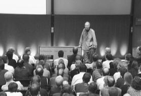
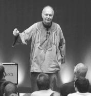
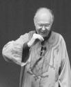

Knuth responde a todas las preguntas
Otro artículo, esta vez es una traducción de una charla de Knuth publicada en 2006, por cierto, Knuth fue premiado recientemente en España, de acuerdo a esta noticia en El Pais.
Knuth responde a todas las preguntas

Todos tenemos nuestros heroes personales, hombres representativos, sobretodo del campo en que nos desarrollamos.
Uno de mis más antiguos héroes personales es el profesor y programador Donald Knuth.
Autor del famoso Art of Computer Programming, y un gran programador. Creador de Metafont y TeX, usados por miles de científicos hoy en día para publicar sus artículos.
Donald Knuth es profesor emérito en la Universidad de Stanford, y probablemente el geek más antiguo que existe. Por ejemplo, las versiones de Tex se aproximan al número trascendente Pi, por ejemplo, la primera versión era la 3, la segunda 3.1, la tercera 3.14, y así sucesivamente. Además tiene la costumbre de pagar 2.56 dólares por cada error encontrado en sus libros (porque “256 centavos es un dolar hexadecimal”).
Imitando al famoso físico Richard Feynman tiene la costumbre de que la última clase en cada curso que dicta está abierta para contestar cualquier pregunta sobre cualquier tema, excepto las relacionadas con política, religión, o el examen final.
Una de estas sesiones de preguntas y respuestas se realizó como una conferencia el 5 de octubre de 2001 en la Technische Universität. Esta sesión fue transcrita en en Notices of AMS (American Mathematical Society). Ustedes pueden descargarla desde ese sitio, pero quiero compartir con ustedes una traducción de algunas de las preguntas que me parecieron más interesantes, los invito a conocer a uno de los grandes pensadores de las ciencias de la computación (los títulos son mi culpa).
Las ciencias de la computación
Knuth: En todos los cursos que doy en Stanford, el último día se dedica a una sesión de “todas las preguntas son contestadas”. Los estudiantes no están obligados a vernir a esta clase, pero si vienen puede preguntar sobre cualquier asunto excepto religión o política o sobre el examen final. Yo copié la idea de Richard Feynman, quien hacía lo mismo en sus clases en Caltech, y siempre era interesante ver que querían saber realmente los estudiantes. Hoy día contestaré cualquier pregunta sobre cualquier asunto. ¿Permitiremos religión o política? No lo sé. Pero no hay un examen final de que preocuparse. Trataré de contestar sin tomar mucho tiempo de modo que tengamos muchas preguntas. Así que ¿quién quiere preguntar primero? ... Bueno, si no hay preguntas [Knuth hace el gesto de retirarse]
Pregunta: Había un reporte especial para el presidente norteamericano, el reporte PITAC, conteniendo algunas recomendaciones. Me preguntaba si usted quiere comentar sobre las prioridades delineadas en esas recomendaciones: mejor ingeniería de software, construir un computador teraflop, mejoras en la Internet incluyendo una mayor seguridad y más ancho de banda, y los impactos socio económicos de manejar información disponible a través de las redes de computadores.
Knuth: Pienso que esa es una solución brillante del problema de que presentarle a un presidente. Pero de hecho lo que me gustaría ver es que a miles de cientificos en computadoras se les permita hacer lo que ellos quieran. Eso lo que realmente permite avances en el campo. De mi experiencia escribiendo The Art of Computer Programming, si me preguntabas en ese tiempo de qué era lo más importante que pasaba en ciencias de la computacion en ese año probablemente no tendría respuesta para la pregunta, pero en cinco años todo el campo cambió. Las ciencias de la computación son el producto de una tremenda colaboración de gente de todo el mundo añadiendo pequeños ladrillos a una enorme pared. Los ladrillos individuales son los que la hacen funcionar, y no los hitos individuales (milestones).

Pregunta: ¿Qué piensa de la investigación en algoritmos criptográficos? Y que piensa de los esfuerzos de los políticos de hoy para poner límites a la investigación en criptografía?
Knuth: Ciertamente toda el área de algoritmos criptográficos es una de las más activa y excitantes áreas en ciencias de la computación en los últimos diez años, y muchos de sus resultado son espectaculares y hermosos. No puedo decir que soy particularmente buen en este tema, debido a que no puedo pensar en buenos ataques por mi mismo. Pero el problema clave es ¿qué pasa con el abuso de los métodos seguros de comunicación? No quiero que los criminales usen esos métodos para ser mejores criminales. Soy un hombre religioso, y pienso que Dios sabe todos mis secretos, así que siempre siento que cualquier cosa que pienso es conocimiento público en cierta forma. Vengo con este bagaje. No siento que tenga que encriptar todo lo que hago. Por otra parte, me sentiría bastante diferente si alguien comenzara a usar tal apertura en contra mía, robando mi cuenta bancaria o cualquier cosa. Así que yo apoyo un alto nivel de secretismo. Pero sobre si debería ser imposible para las autoridades decodificar cosas aún en investigaciones criminales, en casos extremos, allí yo tiendo a irme al lado que quiere que se disponga de alguna manera de quebrar algunas claves a veces.
Dios y la computación
Pregunta: Los matemáticos dicen que Dios tiene el “Libro de las Demostraciones”, donde todas las demostraciones más bellas están escritas. Puede recomendar algunos algoritmos del “Libro de los Algoritmos”.
Knuth: Esa es una buena pregunta. Fue Paul Erdo˝s quien promulgó la ide de que Dios tiene un libro conteniendo las mejores demostraciones matemáticas, y creo que mi amigo Günter Ziegler en Berlin ha recientemente escrito sobre esto. Recuerdo que los matemáticos me decían en los años 1960's que considerarían las ciencas de la computación una disciplina madura cuando esta tuviera 1.000 algoritmos profundos. Pienso que probablemente hemos alcanzado los 500. Ciertamente hay muchos algoritmos que pienso deben ser considerados absolutamente hermosos e inmortales, en algún sentido. Dos ejemplos son el algoritmo de Euclides y el correspondiente que trabaja en notación binaria y que puede haber sido desarrollado en forma independiente en China, casi tan tempanamente como el algoritmo de Euclides fue inventado en Grecia. En mis libros me preocupo con los algoritmos clásicos y que han estado con nosotros por un largo tiempo. Pero todos los años encontramos nuevas ideas brillantes que pienso van a permanecer para siempre.
Pregunta: ¿Cuál es la relación entre Dios y los computadores?
Knuth: En uno de mis libros, 3:16 Bible Texts Illuminated [BTI], uso muestras aleatorias para estudiar sesenta diferentes versículos de la Biblia y lo que la gente diversas percepciones y de diferentes siglos and dicho sobre estos versículos. Hice el estudio primero por mi mismo, y entonces encontré que era los suficientemente interesante como para hacer un libro sobre esto. Obtuve a sesenta de los mejores artistas en el mundo para ilustrar mi libro, muchos de ellos en Alemania. El trabajo artístico fue exhibido dos veces en Alemania, y en otros paises alrededor del mundo. Fue mostrado también en la Catedral Nacional en Washington, DC. En ese libro usé metodologías que los cientificos de la computación usan a menudo para entender un asunto complicado, para ver si este método podría dar alguna luz en la Biblia, la que es en si misma un asunto complicado.
En el libro no doy respuestas. Sólo digo que pienso que es bueno que la vida sea una búsqueda constante. El viaje es más importante que el destino
El futuro de la computación
Pregunta: ¿Cuáles son los cinco problemas más importantes en las ciencias de la computación?
Knuth: No me gusta este negocio de los “primeros diez” . So los úItimos diez lo que me gustan. Pienso que usted debe ir por las cosas pequeñas, las piedras que construyen la pared.
Pregunta: ¿Tiene algunas ideas sobre la computación cuántica?
Knuth: Si, pero no sé mucho al respecto. Es un paradigma muy diferente del que estoy acostumbrado. Tiene en común un montón de cosas con el tipo de computación que conozco, pero tambien es bastante misteriosa en que tienes todas las preguntas al final; no puedes hacer un test y entonces determinar que hacer a continuación. Muchos de ustedes han visto la película “Lola rennt” (llamada “Run Lola Run” en Estados Unidos), en la cual el argumente ocurre en tres tiempos diferentes, con el resultado de tres diferentes ramas. La computación cuántica es algo como eso: el mundo va por muchas ramas, y estamos interesados en la única en donde el resultado es el más aceptable. Soy bueno en computación no cuántica, peroo es muy posible que si la computación cuántica prende, yo no sea capaz de hacer nada nuevo. El trabajo de mi vida en con computadores no porque esté interesado tanto en computación, sino porque suced que yo soy bueno en este tipo de computación. Afortunadamente para mí, encontré que lo que puede hacer bien era interesante para otra gente. No desarrollé una habilidad para pensar sobre algoritmos porque quisiera ayudar a la gente a resolver problemas. De algún modo en ese tiempo cuando era adolescente, tenía una manera peculiar de pensar que me hizo buen programando. Pero puede que no sea bueno en programación cuántica. Parece un mundo diferente del mío.
Pregunta: ¿Tendremos máquinas inteligentes alguna vez? ¿Deberíamos tenerlas?
Knuth: Han habido siempre estimaciones exageradas sobre cuan pronto tendremos una máquina que sea inteligente. Yo todavía no veo señales de acercarnos al problema centra de entender lo que es la cognición, lo que significa pensar. Los neurologistas están haciendo mejores medidas que antes, pero están lejos de encontrar la respuesta de modo que no puedo clasificar a la neurociencia como uno de los campos más activos del trabajo actual. La biología ha estado obteniendo respuestas, con el ADN y las células madres, y todo eso. Pero con la cognición todabía están buscando el secreto.Algunos libros muy provocadores para el pensamiento han salido hace uno o dos años atrás, uno escrito por Hans Moravec [Mo], y otro por Ray Kurzweil [Ku]. Ambos están diciendo que en veinte o treinta años tendremos máquinas más inteligentes que os humanos. Algunos se preocupan por esto. Mi actitud es, si es es verdad, mas poder para ellos. Si son más inteligentes que nosotros ¿cual es el problema? Entonces podremos aprender de ellas. Pero no veo señales de ningún adelanto a la vuelta de la esquina.
Dos semanas atrás estaba en Grecia en el lanzamiento de un nuevo libro de Christos Papadimitriou, quien es presideente (chairman) de ciencias de la computación en Berkeley. El publicó una novela en griego llamada “La Sonrisa de Turing”[Pa]. No quiero contar la histora, pero cuando se publique en alemán o inglés encontrarán una buena discusión de la inteligencia artificial y el test de Turing para la inteligencia.
El modelo más prometedos de como trabaja el cerebro que he visto ve al cerebro como un algoritmo genético dinámico que opera todo el tiempo. Mientras les hablo, sus cerebros tienen un monto de teorías compitiendo sobre lo que voy a decir. Es la sobrevivencia de la más adaptada, una batalla continua entre teorías compitiendo. Algunas llegan a la superficie y realmente entran en la conciencia, pero las otras están todas allí. Algún tipo de apareamiento de conceptos debe estar ocurriendo en nuestras cabezas todo el tiempo. Este modelo parece tener las propiedades correctas para contar sobre como hacemos lo que hacemos con el relativamente bajo tiempo de respuesta que tienen las neuronas. Pero no soy un experto en esto.
Sobre las patentes de software
Pregunta: ¿Cual es su pensamiento sobre las patentes de software? Hay una gran discusión en Europa sobre si el software debería ser patentable.
Knuth: Estoy en contra de patentar cosas que cualquier estudiante se esperaría que descubriera. Han habido muchas desagradables patentes de software en Estados Unidos por ideas que son completamente triviales, y eso me preocupa mucho. Hay una organización que ha trabajado por muchos años para patentar todas las ideas triviales remanentes y hacerlas disponibles a todo el mundo. La manera en que el patentamiento ha avanzado está amenazando con la paralización de la industria del software Los algoritmos son cosas inherentementes matemáticas que deberías ser tan inpatenteables como el valor de π (pi). Pero para algo no trivial, algo como el metodo del punto interior de la programación lineal, hay mas justificacón por que alguien pida un derecho a licenciar el método por un corto tiempo, en vez de mantenerlo como un secreto comercial. Esa es la idea original de las patentes; la palabra patente significa “hacer público”.Fui entrenado en el cultura de las matemáticas, así que no acostumbro cobrarle un centavo cada vez que una persona us un teorema que he demostrado. Pero le cobro a alguien por el tiempo que paso explicándoles cual teorema aplicar. Está bien cobrar por servicios, personalización y mejoras, pero no hagan a los algoritmos en si mismo algo propietario.
Hay un asunto interesante de todas maneras. ¿Podría usted tener la
patente sobre un número entero positivo? No es concebible que si tomamos
un millón de los más grandes supercomputadores de hoy día y las dejamos
correr, ellos puedan calcular una cierta constante de 300 dígitos que
pueda resolver un problema NP completo tomando el mcd de la constante
como un número de entrad, o por otra combinación entretenida. Este
número entero requeriría na cantidad masiva de tiempo de computación
para ser encontrado, y si usted conoce ese entero, entonces usted podría
hacer todo tipo de cosas útiles. Ahora, ¿es ese número entero realmente
descubierto por el ser humano?
¿O es algo que está dado por Dios? Cuando empezamos a pensar en asuntos
de complejidad, debemos cambiar nuestro punto de vista sobre lo que es
natural y lo que es inventado.
El arte de programar

Pregunta: ¿Cuál es la conexión entre matemáticas y la programación de computadores vistos como arte?
Knuth Arte es Kunst. La película “Inteligencia Artificial” se llama “Kunstlicher Intelligenz” en Alemania, esto es artificial también como artítica. Yo pienso en programar con la belleza en mente, como algo que sea elegante, algo de los que puedas estar orgulloso por la manera en que las cosas encajan juntas. Las matemáticas del mismo modo tienen elegancia. Ambos campos, la computación y las matemáticas, son diferentes de otras ciencias porque son artificiales; no están en la naturaleza. Están totalmente bajo nuestro control. Nosotros creamos los axiomas y cuando resolvemos un problema, podemos probar que lo hemos resuelto. Ningún astrónomo sabrá nunca si sus teorías en astronomía son correctas. No puedes ir al sol a medirlo. ASí que estos son mis primeros pensamientos sobre esa conexión. Pero hay una diferencia entre matemáticas y la programación de computadores, y a veces puedo sentir cuando me pongo un sombrero o el otro. Algunas partes de mi le gustan las matemáticas, y a algunas partes de mi le gusta hackear emacs. Pueden ir juntas okay, pero no las veo en el mismo paradigma
**Pregunta: **Usted ha estado emitiendo cheques a la gente que le informa sobre errores en sus libros. Nunca he escuchado de alguien cobrando esos cheques. Sabe cuanto dinero tendría que depositar, si repentitnamente se cobraran todos los cheques?
Knuth: Hay un hombre que vive cerca de Frankfurt quien probablemente tiene más de $ 1,000 (mil dólares) si ha cobrado todos los cheques que le he enviado. Hay un hombre en Los Gatos, California, a quien nunca he conocido que cobra un cheque por $2.56 una vez al mes, y lo ha estado haciendo por varios años. Con todo he girado más de 2.000 cheques en estos años, y el monto promedio excede los $8 dolares por cheque. Aun si todos cobraran su cheque sería más que valioso para mi saber que mis libros van siendo cada vez mejores.